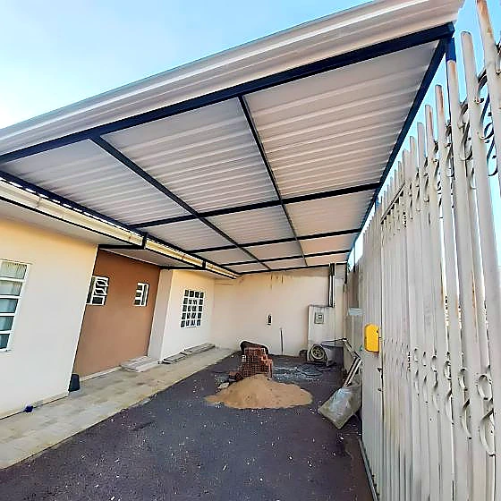

Cobertura metálica é o serviço em que o detalhe invisível decide o resultado: não é a telha que falha, é a inclinação errada, a calha subdimensionada ou o parafuso sem vedação. Um metro de estrutura mal calculated aparece na primeira chuva forte. Executamos em ferro, aço inox e alumínio, conforme a exposição do local e o acabamento que o projeto pede.
Exemplos de Coberturas Executadas

Escolha da telha pelo uso do espaço
- Galvanizada (trapezoidal ou ondulada): a mais econômica e resistente. Esquenta e faz barulho de chuva — boa para garagem e área de passagem, discutível sobre ambiente de permanência.
- Termoacústica (sanduíche): duas chapas com isolante entre elas. Reduz muito calor e ruído. É o padrão quando existe ambiente habitado embaixo.
- Policarbonato: translúcida, mantém a iluminação natural. Usada em área de serviço e corredor lateral que ficariam escuros com telha opaca.
- Mista: telha opaca com faixas de policarbonato, equilibrando sombra e luz.
Inclinação, calha e vão livre
Três pontos técnicos que definem se a cobertura vai dar problema:
- Inclinação: cada perfil de telha tem uma inclinação mínima de trabalho. Abaixo dela, a água não escoa na velocidade necessária e volta pela sobreposição — o vazamento aparece longe do ponto onde a causa está.
- Calha e rufo: a calha é dimensionada pela área de telhado que ela recebe. Calha bonita e estreita transborda em chuva forte de São Paulo. O rufo faz o encontro com a parede e é onde mais nascem infiltrações.
- Vão livre: quanto maior o vão sem pilar, mais robusta a estrutura. Cobertura de garagem sem pilar no meio é possível e é o que a maioria quer — mas exige o perfil correto, não o mais barato.
Estrutura e fixação
- Estrutura: tubular ou perfil, dimensionada pelo vão e pelo peso da telha. Estrutura de cobertura também trabalha com vento — o esforço de sucção é real e é subestimado com frequência.
- Fixação na alvenaria: chumbadores em elemento estrutural. Fixar cobertura em alvenaria de vedação é um erro comum e caro.
- Parafuso de telha: sempre com arruela de vedação, apertado no ponto certo. Apertado demais deforma a telha e cria caminho para água.
- Tratamento: a estrutura fica exposta a chuva permanentemente, então preparo de superfície e pintura antiferrugem não são opcionais.
Onde mais instalamos
- Garagem residencial, com ou sem pilar central.
- Área de serviço e varal coberto.
- Corredor lateral e passagem entre construções.
- Área de churrasqueira e espaço gourmet.
- Doca e área de carga em imóvel comercial.
Erros que mais encontramos em serviço de terceiros
Boa parte do que atendemos é refação. Estes são os problemas que mais aparecem, e todos são evitáveis na execução:
- Inclinação abaixo da mínima de trabalho da telha. A água volta pela sobreposição e o vazamento aparece longe da causa, o que faz muita gente trocar a telha sem resolver nada.
- Calha dimensionada pela estética e não pela área de telhado que recebe. Transborda na primeira chuva forte de verão.
- Rufo mal executado no encontro com a parede. É a origem mais comum de infiltração em cobertura nova.
- Estrutura fixada em alvenaria de vedação. Cobertura também sofre esforço de sucção do vento, que é sistematicamente subestimado.
- Parafuso de telha apertado demais. Deforma a telha em volta da arruela e cria justamente o caminho para a água.
Se você reconheceu algum desses no seu imóvel, vale uma avaliação antes que vire substituição completa.
O que enviar para agilizar o orçamento
Quanto mais completa a informação inicial, mais próxima da realidade fica a estimativa. Envie pelo WhatsApp:
- área a cobrir, em metros
- se pode haver pilar no meio ou o vão precisa ser livre
- se há ambiente habitado embaixo — define telha simples ou termoacústica
- fotos do local e do ponto onde a cobertura encosta na parede
Com esses dados conseguimos dar uma faixa inicial no mesmo dia. O valor final é sempre fechado depois da visita técnica, com as medidas conferidas no local.
Onde atendemos
Atendemos a capital paulista e toda a Grande São Paulo. Boa parte dos nossos serviços é executada na Zona Sul — região do Campo Limpo, Capão Redondo, Jardim São Luís, Santo Amaro e M'Boi Mirim, onde fica nossa oficina — mas trabalhamos em todas as regiões da cidade e nos municípios vizinhos.
Para serviços fora da capital, informe o município junto com as medidas: o deslocamento entra na estimativa desde o começo, sem surpresa depois.
Perguntas frequentes sobre coberturas metálicas
Qual telha é melhor para garagem?
Se a garagem é só de passagem, a galvanizada resolve com o melhor custo. Se há ambiente habitado embaixo ou a laje é usada, a termoacústica compensa pelo conforto térmico e acústico.
A cobertura pode ser instalada sem pilar no meio?
Pode, e é o que a maioria prefere na garagem. O que muda é o perfil da estrutura: vão livre maior exige viga mais robusta. Dimensionamos conforme o vão real medido na visita.
Cobertura metálica esquenta muito?
A telha galvanizada simples esquenta, sim. A termoacústica reduz bastante a transferência de calor. Onde há permanência de pessoas, essa diferença justifica o custo adicional.
Vocês fazem também a calha?
Sim. Calha e rufo fazem parte do serviço e são dimensionados pela área de telhado que vão receber. Cobertura instalada com calha subdimensionada transborda na primeira chuva forte.
Peça seu orçamento
Envie fotos do local e as medidas aproximadas pelo WhatsApp. Retornamos com uma estimativa inicial e, se fizer sentido, agendamos a visita técnica para fechar valor e prazo — sem compromisso.
Falar no WhatsApp: (11) 96640-8235